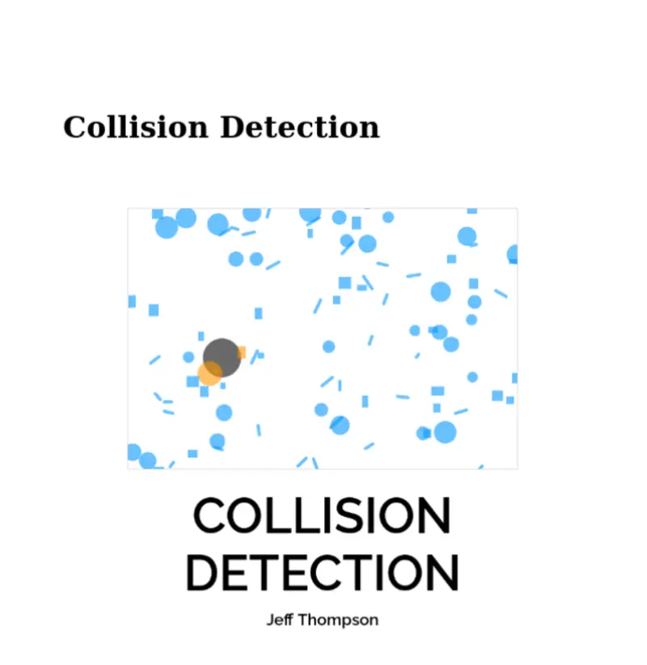

Collision Detection
2026
Jeffrey ThompsonEditor's note: Available online at static mirror site https://leetusman.com/CollisionDetection
A book and examples on collision detection
CC BY NC SA
Rendering output of Jeffrey Thompson’s helpful online Collision Detection book to PDF as I could not find it in a compiled offline form.
This book teaches you fundamentals of detecting two overlapping shapes in the Processing programming library.
Original source was https://jeffreythompson.com/CollisionDetection
original source repository: https://github.com/jeffThompson/CollisionDetection